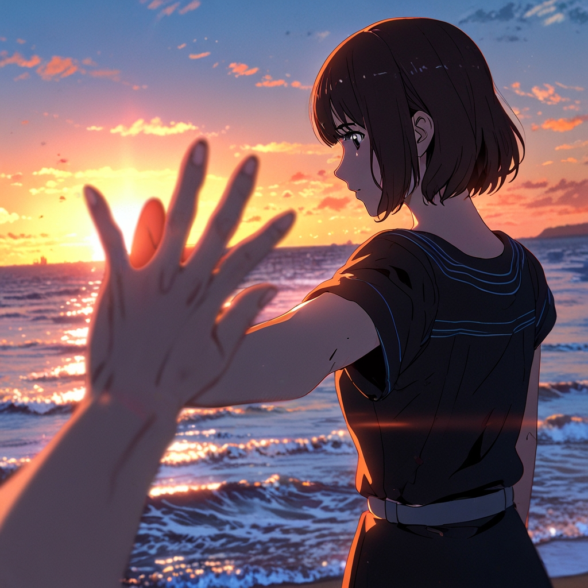

La historia De las manos de la nina
Había una vez, en un pequeño pueblo rodeado de bosques oscuros, una niña llamada Sofía. Vivía con su madre en una casa antigua, de madera, que crujía con el viento. Sofía era una niña tranquila, siempre jugando sola en el jardín o leyendo cuentos antiguos en la biblioteca de su casa. Sin embargo, a veces, sus ojos brillaban con una intensidad extraña, como si en su mente hubiera algo que no lograba entender. Una noche, mientras su madre preparaba la cena, Sofía se levantó y fue al bosque. No le dijo nada a su madre, pero llevaba consigo una linterna. Nadie supo exactamente qué la llevó a adentrarse en ese lugar tan peligroso, pero algunos decían que escuchó voces que la llamaban desde lo profundo de los árboles. Esa noche, su madre la buscó sin descanso, pero no la encontró. A la mañana siguiente, Sofía apareció en su cama como si nada hubiera sucedido. Estaba callada, pálida, y su mirada era vacía, distante. Lo peor era que sus manos… sus manos ya no eran las mismas. Eran grandes, desproporcionadas, y cubiertas de marcas extrañas, como si hubieran tocado algo muy antiguo, algo de otro mundo. La niña no hablaba, pero sus manos se movían solas. En la oscuridad de la noche, la madre escuchaba ruidos extraños provenientes de la habitación de su hija. Cuando entraba, Sofía estaba sentada en la cama, mirando las sombras de la habitación, con las manos extendidas hacia la oscuridad. Algunas veces, las manos se estiraban hacia la puerta, otras hacia las paredes, como si quisieran atrapar algo invisible. Un día, la madre decidió seguir a su hija en silencio durante su paseo al bosque. La niña caminaba por los mismos senderos, como guiada por algo o alguien. Finalmente, llegó a un claro, donde había una vieja tumba cubierta de musgo. Cuando Sofía se acercó, las manos comenzaron a moverse con rapidez, como si estuvieran buscando algo. La madre, aterrada, la tomó por el brazo y la apartó de la tumba. Pero era demasiado tarde. De repente, una sombra se alzó frente a ellas. Era una figura espectral, envuelta en niebla, con los ojos vacíos. Sofía comenzó a gritar y sus manos se estiraron hacia la figura, como si la reconocieran. En ese momento, la sombra desapareció, y con ella, las manos de Sofía volvieron a ser las de una niña normal. Pero el terror no terminó ahí. Esa noche, cuando la madre cerró los ojos para descansar, sintió algo frío y pesado sobre su pecho. Abrió los ojos y vio a Sofía de pie junto a la cama, sus manos extendidas hacia su rostro. La niña no hablaba, pero sus ojos brillaban con una luz sobrenatural, y sus manos eran más grandes que nunca, cubiertas de marcas que parecían moverse, como si algo dentro de ellas estuviera despierto.
